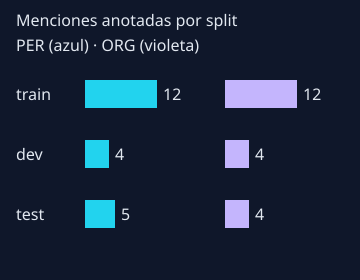

Inspecciona las anotaciones originales. Este visor no predice entidades ni ejecuta un modelo.
Desplaza la tabla horizontalmente para ver la columna BIO. Los símbolos del emoji compuesto se muestran como tokens separados.
| Token | Inicio | Fin | BIO |
|---|
Modifica una etiqueta de la secuencia. I-PER después de O debe fallar. B-PER puede iniciar una entidad nueva junto a otra persona.

No hay inferencia en directo. Se muestran todas las ejecuciones medidas, incluida la inicial que devolvía todo O. Las frases de test ya se habían inspeccionado: estos resultados son descriptivos.
La primera subword recibe la clase de su palabra. Las continuaciones y los tokens especiales (null) reciben -100. Los valores son IDs de ejemplo, no predicciones.